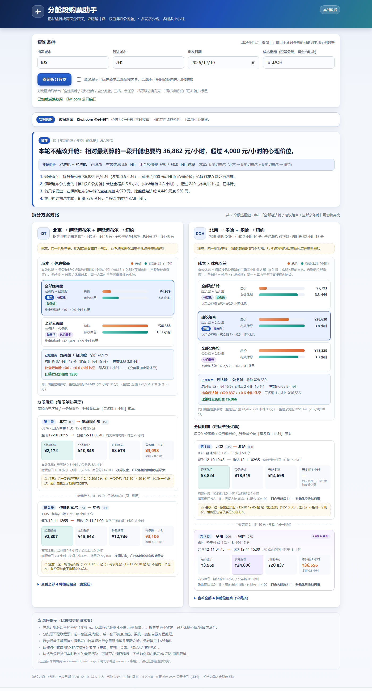

平台只卖「整程直飞 / 整程中转，且整程同一个舱位」。这个工具把整程按枢纽拆成几段分别买票， 每段单独查经济舱和公务舱的最低价，再用 「每多睡 1 小时要花多少钱」 告诉你 到底该升哪一段 —— 或者干脆别升。

1) 下载并解压 flightwatch-v0.1.0.zip 2) Windows 双击 start-windows.bat （macOS / Linux 在该目录执行下面这行） python -m flightwatch serve 3) 浏览器打开 http://127.0.0.1:8765/ ，填出发城市 / 到达城市 / 日期
命令行同样可用：python -m flightwatch plan --from PEK --to JFK --date 2026-12-10 --hubs IST,DOH
按枢纽把整程切成 2 段，每段独立查经济舱 / 公务舱最低价，组合出 4 种混搭， 和整程直飞、最低中转并列对比。
有效休息 = 夜间可睡时长 × 时段权重 × 舱位舒适系数； 用「每多睡 1 小时的成本」排序，而不是只看差价。
升舱让全程多 4 小时以上，或每多睡 1 小时超过 ¥4,000 —— 直接告诉你 「本轮不建议升舱」，不硬推。
每次额外查一次整程不中转的报价，让你能算清「多花 ¥X 换少飞 Y 小时」值不值。
一张往返票 / 两张单程 / 去程拆 / 回程拆 / 双向都拆 / 直飞往返，按总价排序。
价格实时取自 Kiwi 公开接口；同时内置离线数据源，没网也能演示和跑测试。
分段买票不是联程票：前一段延误/取消不保护后一段，行李通常需要重新托运， 过境签证要自己确认。价格是搜索枚举价而非报价承诺，下单前请以航司 / OTA 页面为准。 本项目与 Kiwi.com 无隶属关系，数据来自其网页端使用的公开端点，请低频自用。